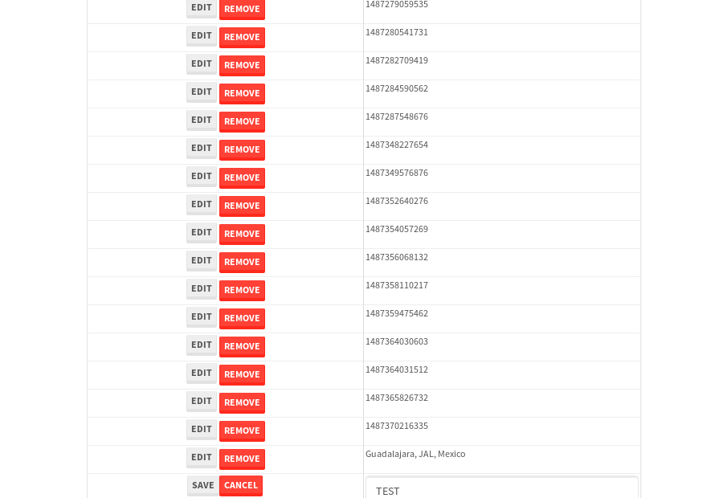

tbColumn.Grid Sorting - 26.703sTests: 5Skipped: 0Failures: 0 should sort data in ascending order then on descending order when sorting by Order Id column - 5.356sTests passed: 100.00%should order data in ascending order when click-sorting an unsorted text column - 4.953sTests passed: 100.00%should order data in descending order when click-sorting an ascending-sorted text column - 5.586sTests passed: 100.00%should order data in ascending order when click-sorting an unsorted date column - 5.415sTests passed: 100.00%should order data in descending order when click-sorting twice an unsorted date column - 5.391sTests passed: 100.00%
tbColumn.Grid Components - 4.524sTests: 3Skipped: 0Failures: 0 should print grid - 1.642s***Skipped***Tests passed: 0%should export grid - 1.579s***Skipped***Tests passed: 0%should show column selector - 1.303sTests passed: 100.00%
tbSingleForm.Form validations - 3.106sTests: 2Skipped: 0Failures: 0 should have an empty required field - 1.921sTests passed: 100.00%should not be able to click on save - 1.185sTests passed: 100.00%
Tubular Filters.tbColumnFilter - 112.786sTests: 12Skipped: 0Failures: 0 should cancel filtering when clicking outside filter-popover - 10.018sTests passed: 100.00%should disable Value text-input for "None" filter - 6.688sTests passed: 100.00%should disable apply button for "None" filter - 6.768sTests passed: 100.00%should decorate popover button when showing data is being filtered for its column - 12.303sTests passed: 100.00%should correctly filter data for the "Equals" filtering option - 9.013sTests passed: 100.00%should correctly filter data for the "Not Equals" filtering option - 9.052sTests passed: 100.00%should correctly filter data for the "Contains" filtering option - 9.243sTests passed: 100.00%should correctly filter data for the "Not Contains" filtering option - 9.638sTests passed: 100.00%should correctly filter data for the "Starts With" filtering option - 7.585sTests passed: 100.00%should correctly filter data for the "Not Starts With" filtering option - 7.08sTests passed: 100.00%should correctly filter data for the "Ends With" filtering option - 7.11sTests passed: 100.00%should correctly filter data for the "Not Ends With" filtering option - 7.183sTests passed: 100.00%
Tubular Filters.tbColumnDateTimeFilter - 142.097sTests: 12Skipped: 0Failures: 0 should cancel filtering when clicking outside filter-popover - 8.467sTests passed: 100.00%should disable Value text-input for "None" filter - 7.115sTests passed: 100.00%should disable apply button for "None" filter - 7.31sTests passed: 100.00%should clear filtering when clicking on Clean button - 17.93sTests passed: 100.00%should decorate popover button when showing data is being filtered for its column - 12.152sTests passed: 100.00%should correctly filter data for the "Equals" filtering option - 7.629sTests passed: 100.00%should correctly filter data for the "Not Equals" filtering option - 7.798sTests passed: 100.00%should correctly filter data for the "Between" filtering option - 12.908sTests passed: 100.00%should correctly filter data for the "Greater-or-equal" filtering option - 12.169sTests passed: 100.00%should corretlly filter data for the "Greater" filtering option - 12.065sTests passed: 100.00%should correctly filter data for the "Less-or-equal" filtering option - 12.628sTests passed: 100.00%should correctly filter data for the "Less" filtering option - 12.598sTests passed: 100.00%
Tubular Filters.tbColumnOptionsFilter - 85.134sTests: 3Skipped: 0Failures: 0 should cancel filtering when clicking outside filter-popover - 10.232sTests passed: 100.00%should decorate popover button when showing data is being filtered for its column - 11.738sTests passed: 100.00%should filter column-elements in accordance to the selected filter when selecting a single option - 51.602sTests passed: 100.00%
Tubular Filters.tbTextSearch - 50.005sTests: 5Skipped: 0Failures: 0 min-chars is not set - 1.199sTests passed: 100.00%should filter data in searchable-column customer name to matching inputted text, starting from 3 characters - 6.955sTests passed: 100.00%should filter data in searchable-column shipper city to matching inputted text, starting from 3 characters - 12.286sTests passed: 100.00%should show clear button when there is inputted text only - 6.911sTests passed: 100.00%should clear filtering when clicking clear button - 17.061sTests passed: 100.00%
tbForm related components.tbCheckboxField - 7.86sTests: 2Skipped: 0Failures: 0 should save changes on "SAVE" - 3.299sTests passed: 100.00%should discard changes on "CANCEL" - 2.53sTests passed: 100.00%
tbForm related components.tbDropDownEditor - 12.17sTests: 5Skipped: 0Failures: 0 should set initial input value to the value of "value" attribute when defined - 1.904sTests passed: 100.00%should show the component name value in a label field when "showLabel" attribute is true - 2.119sTests passed: 100.00%should show a help field equal to this attribute, is present - 1.862sTests passed: 100.00%should submit modifications to item/server when clicking form "Save" - 3.49sTests passed: 100.00%should NOT submit modifications to item/server when clicking form "Cancel" - 2.182sTests passed: 100.00%
tbForm related components.tbTextArea - 17.81sTests: 7Skipped: 0Failures: 0 should set initial input value to the value of "value" attribute when defined - 2.194sTests passed: 100.00%should be invalidated when the number of chars is not in the range of "min" and "max" attributes - 2.65sTests passed: 100.00%should show the component name value in a label field when "showLabel" attribute is true - 1.792sTests passed: 100.00%should show a help field equal to this attribute, is present - 1.657sTests passed: 100.00%should require the field when the attribute "required" is true - 1.978sTests passed: 100.00%should submit modifications to item/server when clicking form "Save" - 4.692sTests passed: 100.00%should NOT submit modifications to item/server when clicking form "Cancel" - 2.175sTests passed: 100.00%
tbForm related components.tbDateEditor - 15.825sTests: 6Skipped: 0Failures: 1 should set initial date value to the value of "value" attribute when defined - 1.951sTests passed: 100.00%should be invalidated when the date is not in the range of "min" and "max" attributes - 3.416sTests passed: 100.00%should show the component name value in a label field when "showLabel" attribute is true - 2.064sTests passed: 100.00%should show a help field equal to this attribute, is present - 1.821sTests passed: 100.00%should submit modifications to item/server when clicking form "Save" - 2.374sExpected false to be true.✗Tests passed: 0.00%should NOT submit modifications to item/server when clicking form "Cancel" - 3.44sTests passed: 100.00%
tbForm related components.tbTypeaheadEditor - 17.8sTests: 7Skipped: 0Failures: 0 should show an options list when there is an API-info/component entered-data - 2.009sTests passed: 100.00%should select the option clicked - 2.312sTests passed: 100.00%should show a "delete" button when an option/match is selected, and delete the option if button is clicked - 3.016sTests passed: 100.00%should show a label value equal to the component name when "showLabel" attribue is true - 1.91sTests passed: 100.00%should require a value when "require" attribute is true - 2.186sTests passed: 100.00%should submit modifications to item/server when clicking form "Save" - 3.113sTests passed: 100.00%should NOT submit modifications to item/server when clicking form "Cancel" - 2.567sTests passed: 100.00%
tbForm related components.tbSimpleEditor - 21.169sTests: 9Skipped: 0Failures: 0 should set initial input value to the value of "value" attribute when defined - 1.82sTests passed: 100.00%should be invalidated when the number of chars is not in the range of "min" and "max" attributes - 2.495sTests passed: 100.00%should show the component name value in a label field when "showLabel" attribute is true - 1.731sTests passed: 100.00%should set input placeholder to the value of "placeholder" attribute - 1.952sTests passed: 100.00%should validate the control using the "regex" attribute, if present - 2.238sTests passed: 100.00%should show a help field equal to this attribute, is present - 1.793sTests passed: 100.00%should require the field when the attribute "required" is true - 2.019sTests passed: 100.00%should submit modifications to item/server when clicking form "Save" - 3.547sTests passed: 100.00%should NOT submit modifications to item/server when clicking form "Cancel" - 2.912sTests passed: 100.00%
tbForm related components.tbNumericEditor - 17.748sTests: 7Skipped: 0Failures: 0 should set initial component value to the value of "value" attribute when defined - 1.778sTests passed: 100.00%should be invalidated when the entered number is not in the range of "min" and "max" attributes - 2.352sTests passed: 100.00%should show the component name value in a label field when "showLabel" attribute is true - 2.294sTests passed: 100.00%should show a help field equal to this attribute, is present - 2.166sTests passed: 100.00%should require the field when the attribute "required" is true - 2.499sTests passed: 100.00%should submit modifications to item/server when clicking form "Save" - 3.603sTests passed: 100.00%should NOT submit modifications to item/server when clicking form "Cancel" - 2.347sTests passed: 100.00%
tbForm Connection Error NoModelKey - 3.4sTests: 1Skipped: 0Failures: 0 tbForm connection error functionality - 0.47sTests passed: 100.00%
tbForm Connection Error NoServerUrl - 2.281sTests: 1Skipped: 0Failures: 0 tbForm connection error functionality - 0.484sTests passed: 100.00%
tbGridComponents - 31.861sTests: 6Skipped: 0Failures: 4 should add item with newRow method - 4.163sExpected 'EDIT REMOVE TEST' not to be 'EDIT REMOVE TEST'.✗Tests passed: 50.00%should add item with newRow method and cancel action - 1.391sTests passed: 100.00%should update item with tbSaveButton - 1.668sExpected '' to be 'TEST'.✗Tests passed: 0.00%should NOT update item on cancel Update action - 0.972sFailed: ElementNotVisibleError✗Tests passed: 0.00%should remove item with tbRemoveButton - 21.265sExpected 53 not to be 53, 'should remove the row from the table'.✗Tests passed: 50.00%should NOT remove item on cancel Remove action - 1sTests passed: 100.00%
tbGridPager.navigation buttons - 11.484sTests: 1Skipped: 0Failures: 0 should perform no action when clicking on the numbered navigation button corresponding to the current-showing results page - 1.7sTests passed: 100.00%
tbGridPager.navigation buttons.first/non-last results page related functionallity - 4.965sTests: 2Skipped: 0Failures: 0 should disable "first" and "previous" navigation buttons when in first results page - 2.388sTests passed: 100.00%should enable "last" and "next" navigation buttons when in a results page other than last - 2.576sTests passed: 100.00%
tbGridPager.navigation buttons.last/non-first results page related functionallity - 4.819sTests: 2Skipped: 0Failures: 0 should disable "last" and "next" navigation buttons when in last results page - 2.323sTests passed: 100.00%should enable "first" and "previous" navigation buttons when in a results page other than first - 2.495sTests passed: 100.00%
tbGridPager.page navigation - 10.178sTests: 5Skipped: 0Failures: 0 should go to next results page when clicking on next navigation button - 3.695sTests passed: 100.00%should go to previous results page when clicking on previous navigation button - 1.791sTests passed: 100.00%should go to last results page when clicking on last navigation button - 1.325sTests passed: 100.00%should go to first results page when clicking on first navigation button - 1.533sTests passed: 100.00%should go to corresponding results page when clicking on a numbered navigation button - 1.834sTests passed: 100.00%
tbGridPagerInfo - 5.025sTests: 2Skipped: 0Failures: 0 should show text in accordance to numbered of filter rows and current results-page - 1.395sTests passed: 100.00%should show count in footer - 0.549sTests passed: 100.00%
tbHttp - 19.03sTests: 8Skipped: 1Failures: 0 should be authenticated - 3.93sTests passed: 100.00%retrieve data - 2.465sTests passed: 100.00%should not login bad credentials - 2.419sTests passed: 100.00%should have a refresh token - 2.843sTests passed: 100.00%should remove authentication - 2.339sTests passed: 100.00%get method-Is not authenticated - 2.356sTests passed: 100.00%post method-Is not authenticated - 2.672sTests passed: 100.00%should regenerate access token on post - 0s***Skipped***Tests passed: 0%
tbPageSizeSelctor - 9.41sTests: 4Skipped: 0Failures: 0 should filter up to 10 data rows per page when selecting a page size of "10" - 2.288sTests passed: 100.00%should filter up to 20 data rows per page when selecting a page size of "20" - 1.79sTests passed: 100.00%should filter up to 50 data rows per page when selecting a page size of "50" - 2.147sTests passed: 100.00%should filter up to 100 data rows per page when selecting a page size of "100" - 1.695sTests passed: 100.00%
tbRowSelectable - 10.017sTests: 2Skipped: 0Failures: 0 selected rows - 5.351sTests passed: 100.00%unselected rows - 2.96sTests passed: 100.00%
tbSingleForm - 22.97sTests: 8Skipped: 0Failures: 1 should load correct info - 2.622sTests passed: 100.00%should change customer name - 2.432sTests passed: 100.00%should save it - 3.437sFailed: Element is not enabled✗Tests passed: 0.00%should clear the inputs - 2.521sTests passed: 100.00%should update - 2.893sTests passed: 100.00%should reset editor - 3.919sTests passed: 100.00%should not save if not Changes - 2.36sTests passed: 100.00%should not be able to click on save - 2.784sTests passed: 100.00%


{kind=link}